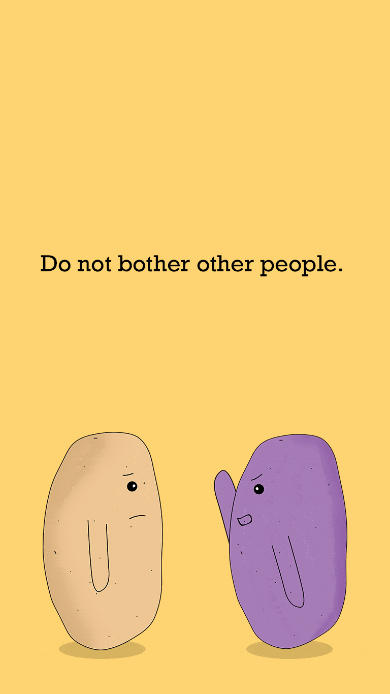
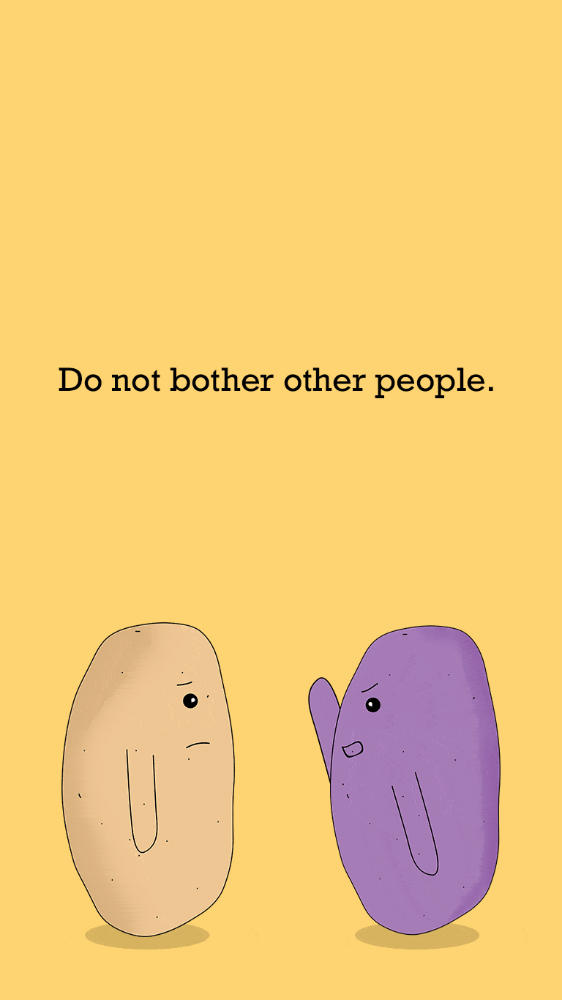

Religie Project

 

Solanumisme
Logo, Brading WebdesignVoor dit project moest er een geloofsovertuiging verzonnen worden met je eigen normen en waarden.
Religie Solanumisme
Aardappelisme (potato-isme)
Doelgroep: Het Solanumisme is voor elke ziel, iedereen kan zich bekeren tot dit geloof als gij dit wilt (eigen vrijheid).
De volgende media uitingen heb ik hiervoor gemaakt:
Een Logo, Posters, Gifjes, en een Website.
Get in Touch!
Heb jij een nieuwe website of een nieuwe huisstijl nodig. Neem dan nu contact op met mij.